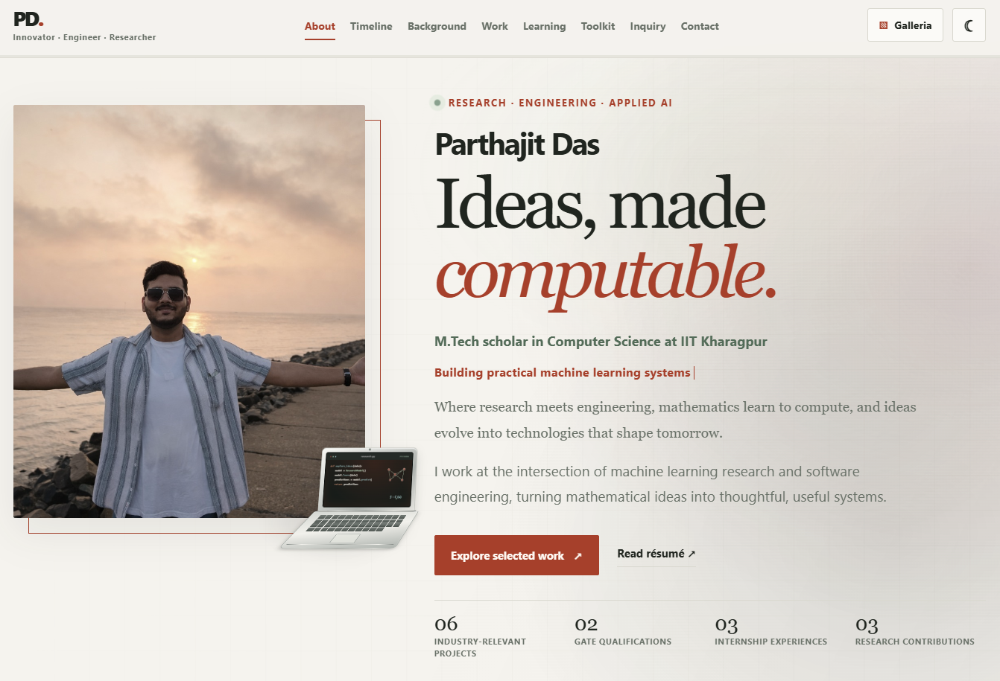

July–October01
IDEAS · Indian Statistical Institute, Kolkata
Internship completedResearch · Engineering · Applied AI
M.Tech scholar in Computer Science at IIT Kharagpur
Building practical machine learning systems.
Where research meets engineering, mathematics learn to compute, and ideas evolve into technologies that shape tomorrow.
I work at the intersection of machine learning research and software engineering, turning mathematical ideas into thoughtful, useful systems.
01 / Milestones
July–October01
IDEAS · Indian Statistical Institute, Kolkata
Internship completedMarch02
Graduate Aptitude Test in Engineering
GATE qualifiedJune–July03
Electronics and Communication Sciences Unit · ISI Kolkata
Programme completedJuly04
Tenth Summer School · Team project recognition
Special MentionMarch05
Graduate Aptitude Test in Engineering
GATE qualifiedApril–May06
IISc · Four IITs · ISI Kolkata
Shortlisted07
Indian Institute of Technology Kharagpur
Admitted · IIT KharagpurNov–Dec08
SEAL · @IIT Kharagpur
ShortlistedNov–Dec09
Chosen programme · Registration confirmed02 / Background

2026 — PresentCURRENTLY PURSUING

2022 — 2026UNDERGRADUATE

2008 — 2026FOUNDATION
02 / Selected work
Selected work
YEAR—
01 / 01
A computer vision project exploring visual analysis for agriculture.
Explore project
A comparative analysis of GAN architectures for image synthesis.
Explore project
A recommendation systems project focused on movie discovery.
Explore projectA command-line project exploring core systems concepts.
Explore projectA weather-focused application with a data-driven interface.
Explore project
A responsive portfolio presenting research, projects, milestones, and skills.
Explore project03 / Learning
A considered record of the work, learning and recognition that shaped my path.
THE ARCHIVESelected credentials, kept in view.
Showing 4 of 5 credentials
04 / Toolkit
06 / Inquiry
Seminar at IIT Kharagpur
This report explores how mathematical models can represent real-world fair-division problems. It examines utility matrices, valuation distances, and two-dimensional mapping techniques to analyze allocation instances. The study focuses on Multidimensional Scaling (MDS) and explicit maps based on singular values, using real-world and synthetic datasets to explore patterns in resource allocation.
B.Tech Final Year Research Project
Developed a research-oriented hybrid recommender combining DistilBERT, Neural Collaborative Filtering (NCF), SVD, and LightGBM to address recommendation accuracy, cold-start, and data-sparsity challenges. Evaluated the approach with RMSE, Precision, Recall, and F1-Score against individual recommendation models.
ISI Summer School
Conducted a comparative study of Vanilla GAN, WGAN, and WGAN-GP during the ISI Kolkata Summer School. Evaluated the architectures on benchmark image datasets, examining training stability, convergence, mode collapse, gradient penalties, and image-generation quality.
07 / Get in touch
I’m glad to hear from researchers, engineers, students, and curious minds. Send a note about a project, opportunity, or question and I’ll get back to you.